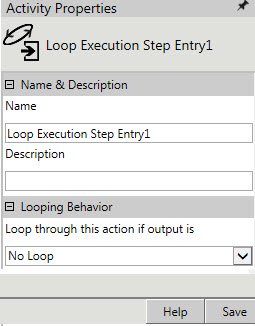

No
Activity Description
The user can use this activity if an instance level association between the End Activity Execution activity and the activity to be ended is required. If this activity is not used, the End Activity Execution activity ends all the instances of the activity that is to be ended. This activity has to be used when the For Loop and For-Each-Loop activities are used in a workflow.
Activity Scenario
Consider a scenario where a ForEach-Loop activity is linked to a Wait-For-Event activity and an Approval activity. There is a parallel execution of each instance of Wait-For-Event activity that is associated to an instance of Approval activity. With the ForEach-Loop activity running in parallel execution mode, multiple instances of Wait-For-Event activity and Approval activity are created. In such a scenario, the Loop Execution Step Entry activity can be used to establish an instance level association between the End Activity Execution activity and the activity to be ended, thereby controlling the instances to be ended. Loop Execution Step Entry activity has to be placed in such a way that it is the parent activity for Wait-for-event and approval activity.
See the User Scenarios of End Activity Execution activity and End Child Workflow Execution activity for a detailed understanding of this activity.
Activity Properties

Name and Description
The properties in the Name & Description group have been described below. You can use these properties to specify the name and description for the activity.
Name - This property is to be used to specify a name for the activity.
Property Type: Mandatory (This property must be set.)
Description - This property can be used to specify a brief description to be displayed for the activity.
Property Type: Optional (This property needs to be set only if necessary.)
Looping Behavior
The property in the Looping Behavior group has been described below. You can use this property to specify the looping behavior of the activity.
Loop through this action if output is - This property is used to specify the condition for looping the activity by selecting an activity output from the drop-down field.
Property Type: Optional (This property needs to be set only if necessary.)